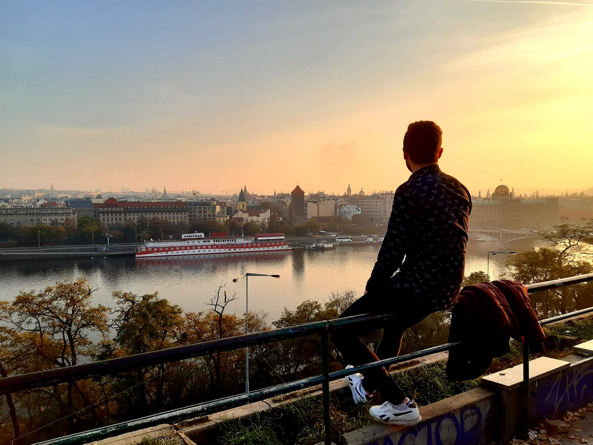

About Me
Hi! I’m Mojab, a Syrian design student in Dessau,
with focus on communication, digital and visual identity design.
As a designer, I tend to understand problems and systems for a
sustainble and effective solution. As a person, I find myself
somewhere between east and west, tradition and modern,
paper and pixels, olive oil and chocolate.

HomePage